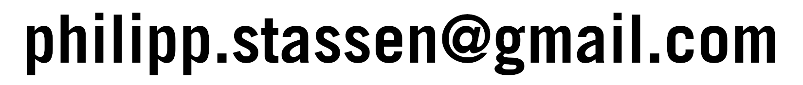

I am a social person who enjoys connecting with others. I like to engage in all sorts of discussions and debates, and while sometimes I can be questioning and sceptical, I always am a good sport.
My current computer setup runs NixOS with Xmonad, and I experiment with Raspberry Pi projects.
I enjoy hiking and running, and in the winter I go ski touring or (aprés) skiing with friends. (other beginner ski tourers around munich?)
